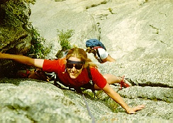

Located north of Vale Park, Lumpy Ridge is a garden of challenging routes for climbers of all ages and abilities. The three-mile granite ridge contains over 400 climbing routes.
Guides from The Colorado Experience will be happy to lead you to some of the most sought-after climbing routes in the country.
Difficulty Level: Beginner to expert
Time: Half day or full day
Physical Stress: Mild to extreme